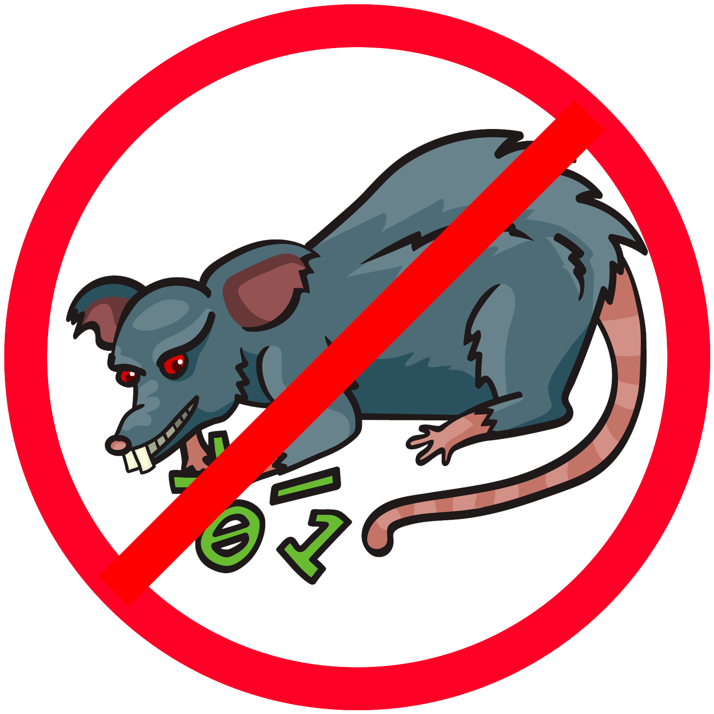

<aside class="main-sidebar sidebar-dark-primary elevation-4" style="width: 300px;">
  <!-- Логотип -->
  <a href="index.html" class="brand-link">
    
    <span class="brand-text font-weight-light">
      <div align="center"><b>Система мониторинга<br>AntiRAT</b></div>
    </span>
  </a>

  <div class="sidebar">
    <!-- Боковое меню -->
    <nav class="mt-2">
      <ul class="nav nav-pills nav-sidebar flex-column"
          data-widget="treeview" role="menu" data-accordion="false">

        <li class="nav-item">
          <a href="index.html" class="nav-link" id="monit">
            <i class="nav-icon fas fa-tachometer-alt"></i>
            <p>Мониторинг</p>
          </a>
        </li>

        <li class="nav-item">
          <a href="events-analyze.html" class="nav-link" id="event">
            <i class="nav-icon fas fa-line-chart"></i>
            <p>Анализ событий процессов</p>
          </a>
        </li>

        <li class="nav-item">
          <a href="netflow-analyze.html" class="nav-link" id="netflow">
            <i class="nav-icon fas fa-bar-chart"></i>
            <p>Анализ сетевых потоков</p>
          </a>
        </li>

        <li class="nav-item">
          <a href="testing.html" class="nav-link" id="test">
            <i class="nav-icon fas fa-chart-pie"></i>
            <p>Анализ точности</p>
          </a>
        </li>

      </ul>
    </nav>
  </div>
</aside>